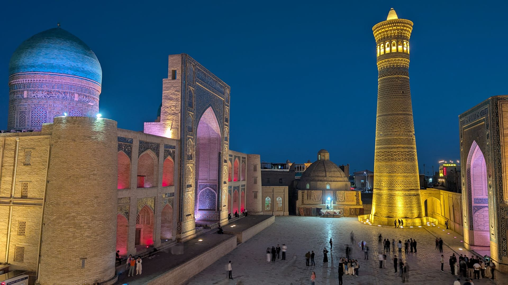
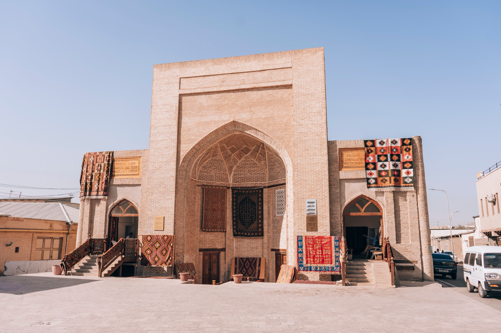
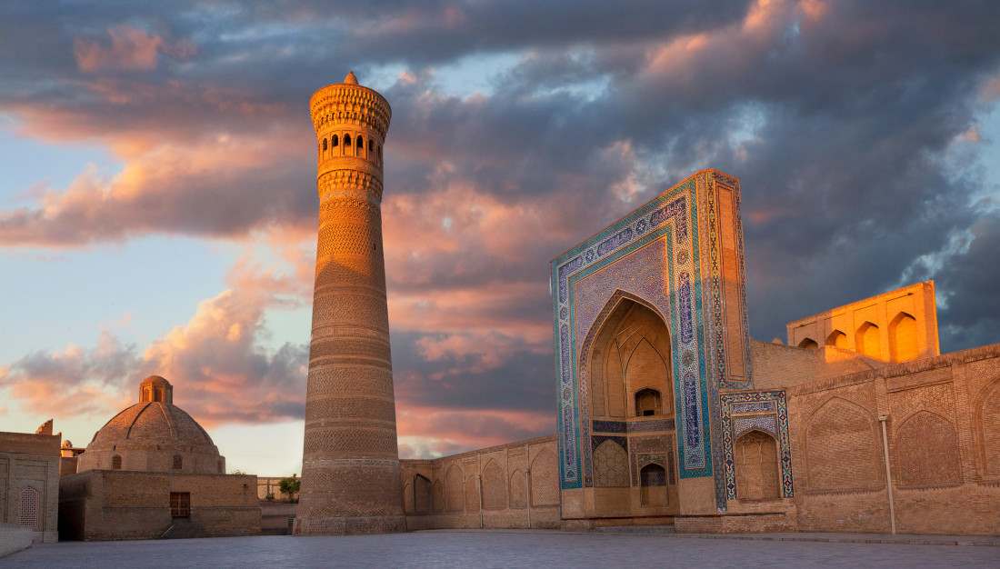
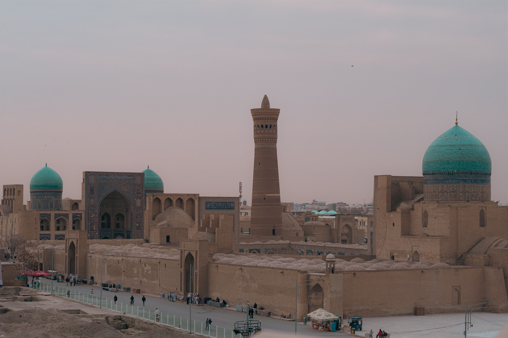
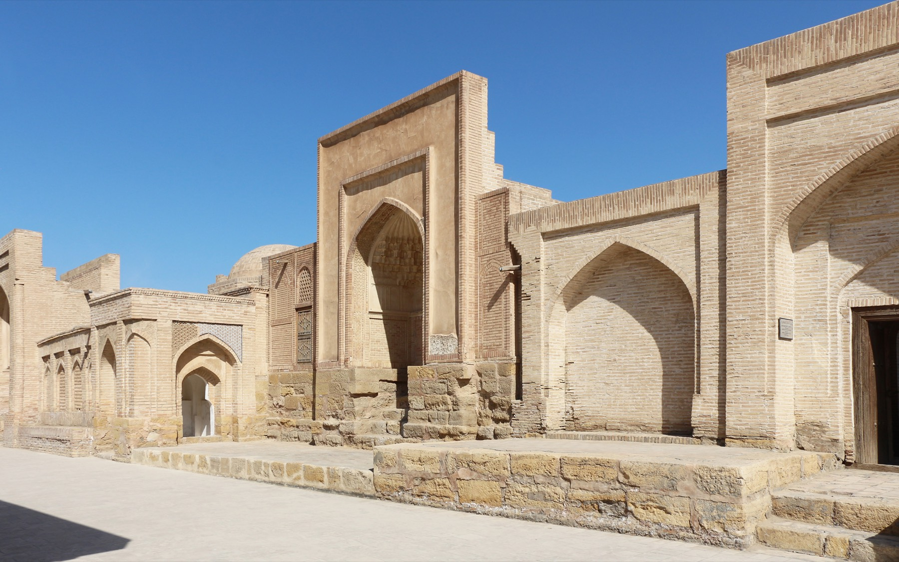
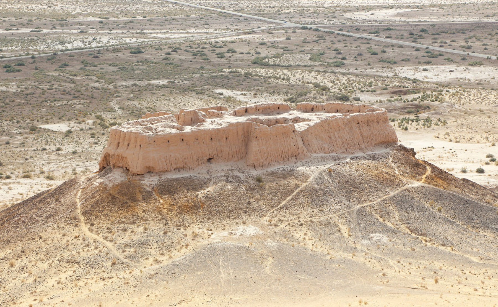
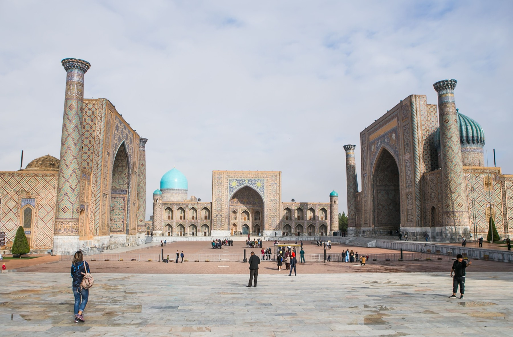
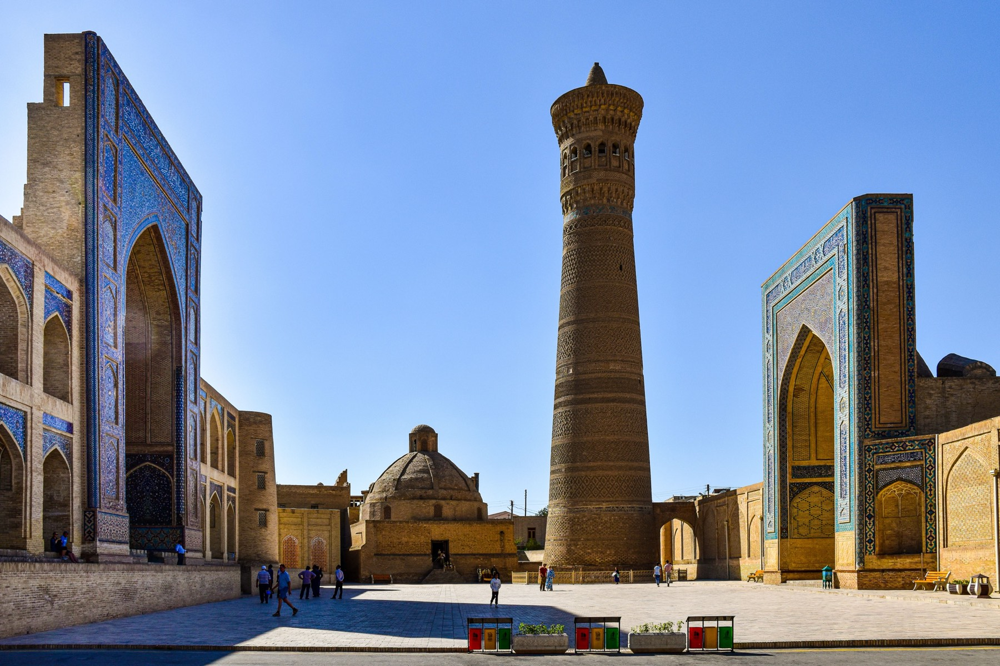
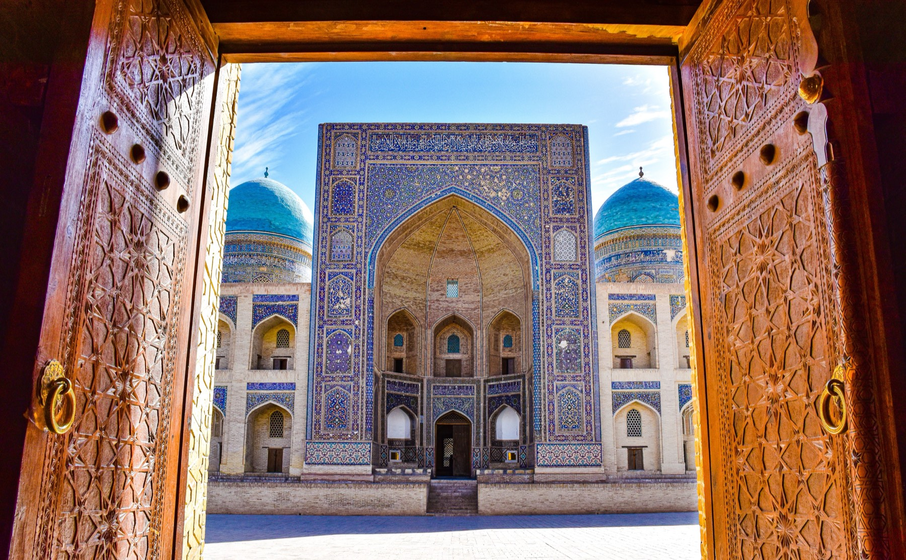
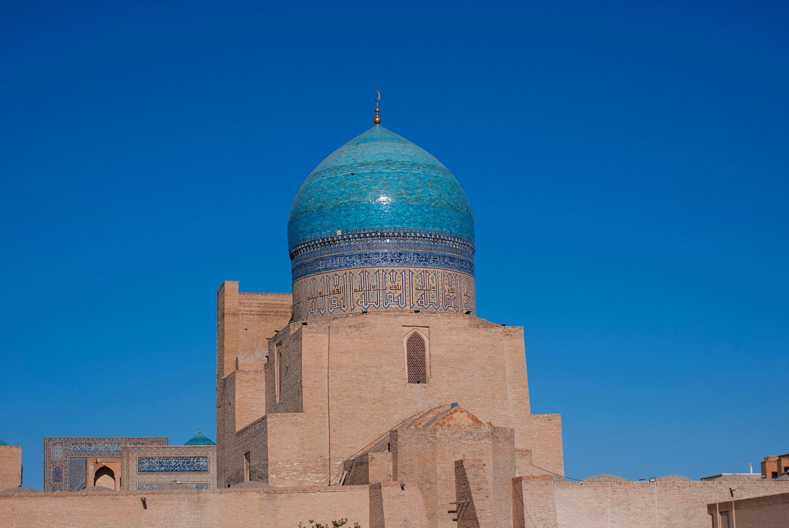

Bukhara and Samarkand, told the way a local would tell them.
I'm Aziz — I've been walking these streets my whole life, and I'd rather show you the well my grandmother still fetches water from than recite a plaque.

I'm Aziz — I've been walking these streets my whole life, and I'd rather show you the well my grandmother still fetches water from than recite a plaque.
Silkvista Tours is mine, and I run it out of Bukhara. I plan the routes and I walk them with you myself — no subcontracted strangers, no memorized script.
I grew up in the city I'll be showing you, and that changes what a day looks like. I bend the route around what's actually happening: a workshop with its kiln open, the hour the light lands on the tilework, the teahouse still making plov the old way. You'll get the history, but you'll also get the things a guidebook can't tell you — what a fair price looks like, which shop isn't marking up for tourists, where to eat after we say goodbye.
I handle the parts that eat your holiday: transport between cities, tickets, and timing that keeps you a step ahead of the coach tours. Groups stay small, plans stay flexible, and every recommendation I give you is one I'd give a friend.

Carpets outside a working caravanserai, BukharaPoi Kalyan, the Ark Fortress, Lyabi-Hauz, and the madrasahs in between — with a stop inside a working pottery or wood-carving studio so you see the old town's crafts still being made, not just displayed.

Bukhara at sunsetThe essential first look at Bukhara, built for first-timers. We walk the old town's landmarks together and I fill in the stories behind them — the easy way to get your bearings on day one.

The old town at dusk, BukharaTwo and a half thousand years of the city, told on foot — the khans, the caravans and the madrasahs, and how they shaped the streets you're standing in.

Chor-Bakr necropolis, outside BukharaStep outside the old town walls: the Chor-Bakr necropolis and Bukhara's palaces on the edge of the city, at a private pace with just your group.

Ayaz Kala desert fortressTurn the long drive across the Kyzylkum into part of the trip — with stops at the ancient desert fortresses and the lake along the way. Runs in both directions.

The Registan, SamarkandI also guide in Samarkand — the Registan at the right hour is unlike anywhere else in the country. Exact itinerary and booking link going up soon; message me directly in the meantime.

Poi Kalyan by day, BukharaHave less time than usual, a specific interest, or a family group? I put together private itineraries around what you actually want to see — just tell me what you're after.
No memorized plaques recited word for word — I tell you what I'd tell a friend, including the parts guidebooks leave out.
We step inside working studios — potters, wood-carvers, embroiderers — so craft isn't something you see behind glass.
Where the plov is actually good, what a fair price looks like, which shop isn't marking up for tourists — the things locals know.

Through the doors of the Kalyan Mosque
Kalyan Mosque domeFor custom tours, dates, or questions about Samarkand, message me directly — it's usually the fastest way.